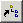
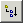
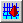

| Button | Menu Item | Description |
|---|---|---|
| File | New... | Creates a new ADF file. You will be prompted for the file format. | |
| File | Open... | Open an existing ADF or CGNS file. A file selection box will be invoked to allow filename selection. | |
| File | Save As... | Save a copy of the current file. A file selection box will be invoked to allow the filename selection. | |
| File | Reload | Reload the current file. | |
| File | File Info... | A dialog box will invoked, which displays the file properties. | |
| Config | Auto Data Size... | This invokes a panel to allow setting the data size threshold for automatically loading node data into the Node Data window. The default value is set at 1K bytes. | |
|  | Tree | Follow Links | If enabled, then nodes which are linked to nodes containing children (subnodes) will be expanded. These subnodes will be displayed in the Node Tree in blue and are not editable. If not enabled, only the link nodes are shown. |
|  | Opens the next level of child nodes for all the nodes in the Node Tree. | |
| Closes the last level of open nodes in the Node Tree. | ||
| Tree | Find... | Invokes a Find dialog box, which allows specification of a node to search for in the Node Tree. Wildcards are allowed in the node name. | |
| Tree | Find Again | Searches for the next node in the Node Tree which matches the pattern specified in Find Node... | |
| Tools | CGNS Version... | If CGNSversion is installed, this will invoke a panel to allow a CGNS file to be converted to a different CGNS version number. | |
| Tools | Check CGNS... | If CGNScheck is installed, this will invoke a panel to check the current file for CGNS compatability. | |
|  | Tools | Plot CGNS... | If CGNSplot is installed, this will plot the current CGNS file. |
| Tools | Calculate CGNS... | If CGNScalc is installed this will invoke it for the current file. | |
| Tools | Unit Conversions... | Invokes a units conversion panel. | |
| Help | CGNSview... | Invokes the CGNSview documentation. |